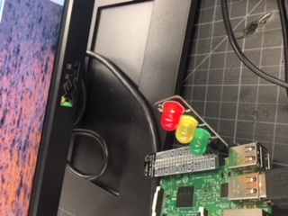

Oh goodie. More coding. As you could probably guess, my experience with Raspberry Pi was not the best.
I managed to get one picture of something I coded, but did not send or copy the videos and photos from my desktop to my actual computer.
I learned that physical computing is not something I want to do because it is really really hard and not fun at all.
It requires these programs called Scratch and Python to work and code images and stuff, which we used for taking pictures with a camera.
I honestly cannot say if I have a favorite Raspberry Pi project, because I thought the entire thing was one long project. I guess figuring out how to code patterns onto that little square of lights was pretty fun. I got to spell out my name in Morse Code.